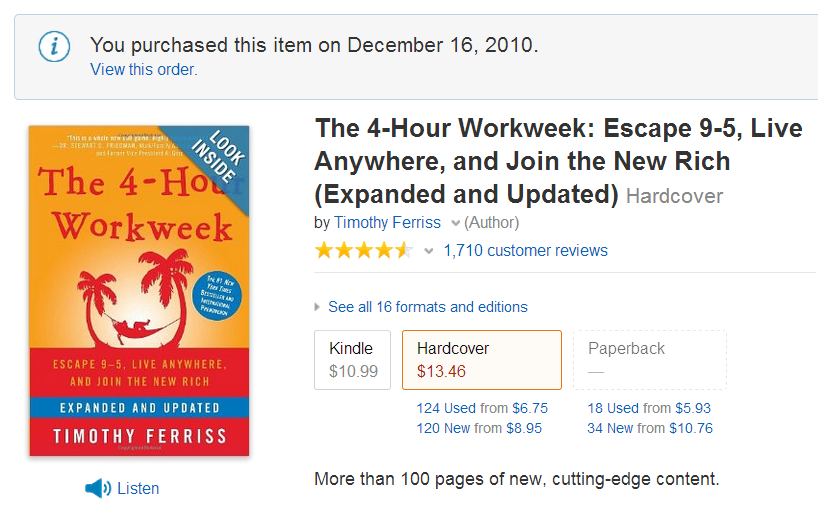
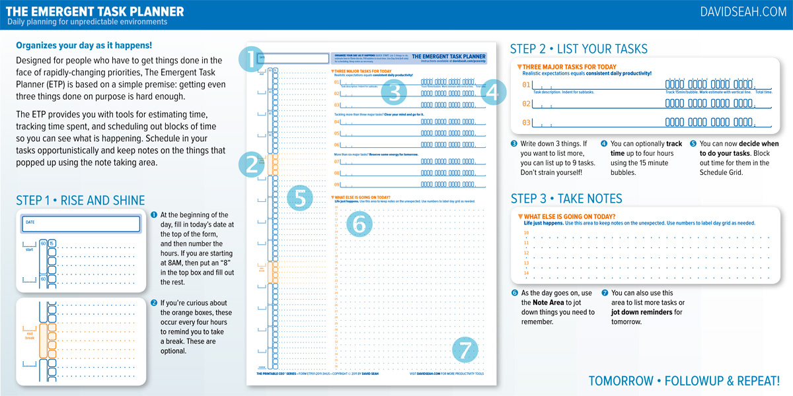

Automate the Things You Hate
Allen Sanborn
@1001monkeys
"How long would it take your organization to deploy a change that involves just one single line of code? Do you do this on a repeatable, reliable basis?"
The 4-hour Workweek
 http://www.wikisummaries.org/The_4-Hour_Workweek http://www.youtube.com/watch?v=OYpRja0-vrUStep #1 Process of Elimination
Pareto's Law
80/20 princple
Quantify the 20% of activities that are producing 80% of desired outcome
... also people, customers, work tasks, chores, friends
Goal #1
Find inefficiencies in order to eliminate themGoal #2
Find strengths in order to multiply them
Track your time
Knowledge Economy
- Shift from presence to performance.
- Cut out the static and things that consume time and income without contributing back.
Step #2 Cultivating Selective Ignorance
- Don't be all input with no output
- Catch up when need be as opposed to keeping up at all times
- E-Mail is a tool not a workspace
- Focus on single tasks. Multi-tasking is a lie.
Step #3 Outsourcing Your Life
- Stop thinking about yearly salary and focus on hourly salary
- You stop getting paid at 5PM. Don't do pro-bono work for you bosses.

Continuous Delivery

- Treat servers like cattle, not pets
- Tyler Durden: Listen up, maggots. You are not special. You are not a beautiful or unique snowflake. You're the same decaying organic matter as everything else.
cinst virtualbox
cinst vagrant
vagrant box add lucid32 http://files.vagrantup.com/lucid32.box
vagrant init lucid32
vagrant up
- VirtualBox
- Vagrant
- VeeWee
- VeeWee for Windows (windows-fromscratch)
Hyper-V comes with Windows 8 Pro!!
- Hyper-V for Developers is a great resource for getting started.
-
Use Convert-WindowsImage.ps1 to convert an Windows OS ISO to a bootable VHD
Web Plaform Installer
http://www.microsoft.com/web/downloads/platform.aspx- use the command line: "C:\Program Files\Microsoft\Web Platform Installer\WebpiCmd.exe"
- Web Platform Installer v4 Command Line (WebPICMD.exe) - RTW release
- feed with dependencies and install directions: https://www.microsoft.com/web/webpi/4.6/webproductlist.xml
Bonus links for WebPI
Web PI APIs: Install a product from a custom feed Web PI APIs: Download Latest Web Stack Products for Any Platform Web PI APIs: Visualize Product Hierarchy with DGMLSample of WebPI running aspnet_regiis
This fixes the case where Visual Studio was installed before IIS and your ASP.NET web site won't run... sigh
ASPNET_REGIIS_NET45
Execute ASP.NET IIS Registration tool
7.5
Microsoft
http://www.iis.net/
http://www.microsoft.com/web/media/gallery/apps-screenshots/IIS_WebPlatformInstaller_GenericWizardArt.png
The ASP.NET IIS Registration tool (Aspnet_regiis.exe) is used to register ASP.NET applications with Internet Information Services (IIS)
http://www.microsoft.com/ProTools
2010-11-09T16:30:24Z
The ASP.NET IIS Registration tool (Aspnet_regiis.exe) is used to register ASP.NET applications with Internet Information Services (IIS)
IIS7
ASPNET45
NETFramework45
1
6
0
0
%windir%\system32\cmd.exe
/C %windir%\Microsoft.NET\Framework64\v4.0.30319\aspnet_regiis.exe -iru
Examples with CLI
Install MVC 3 and WebMatrix
Ex: >WebPICMD.exe /Install /Products:MVC3,WebMatrix
List all installed features and components
Ex: >WebPICMD.exe /List /ListOption:Installed
--Previously Installed Products
ID Title
----------------------------------------
AzureNodeSDK Windows Azure SDK for Node.js
DACFX Microsoft SQL Server 2012 Data-Tier Application Framework (DACFx) (May 2013)
IISExpress IIS 7.5 Express
IISExpress_7_5 IIS 7.5 Express (Sep 2011)
IISExpress_ByPlatform IIS 8.0 Express (Windows Vista and up) Or IIS 7.5 Express (Windows XP)- August 2012
iisnode_if_iis7_exists IISNode for IIS (IIS exists)
iisnodedev32 IISNode for IIS Express
LightSwitch11_AzurePublish_1_1 LightSwitch Azure Publishing 1.1 add-on for Visual Studio 2012 - June 2012 SP1
MVC3 ASP.NET MVC 3 (Visual Studio 2010)
Create an offline cache for installations with no internet connection
Ex: >WebPICMD.exe /Offline /Products:WebMatrix,SQLExpress /Path:c:\OfflineCache
NuGet is AWESOME!!!
Think of it as a generalized tool for managing dependencies.
Main use cases
- NuGet.exe for 3rd party dependencies (dll, js, images)
- Chocolatey for applications
- BoxStarter for environments
- OctopusDeploy for Continuous Integration deployments
Chocolatey for exe/msi/zip
- Install Visual Studio Ultimate: cinst VisualStudio2012Ultimate
Chocolatey for windowsfeatures
- List all windows features: clist -source windowsfeatures
- Install IIS: cinst IIS-WebServerRole -source windowsfeatures